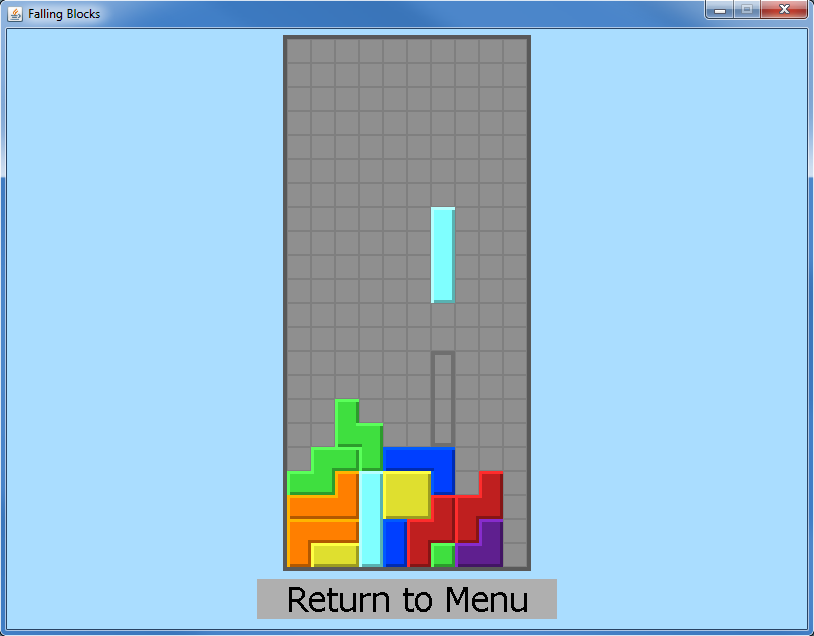
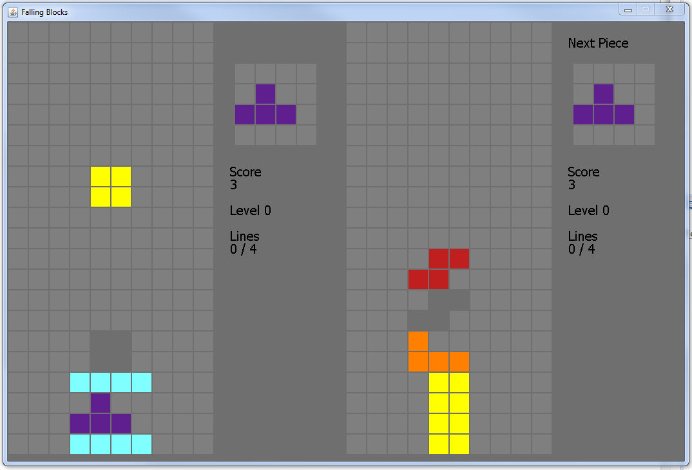

This is a tetris clone, designed for one or two players. Created by @Thinic .
Falling Blocks (v0.3.4.13)
Falling Blocks (v0.3.3.12)
Falling Blocks (v0.3.2.11)
Falling Blocks (v0.3.1.10)
Falling Blocks (v0.3.0.9)
Falling Blocks (v0.2.2.8)
Falling Blocks (v0.2.2.7)
Falling Blocks (v0.2.1.6)
From version 0.3.1.10 (in early development).

From earlier version.
